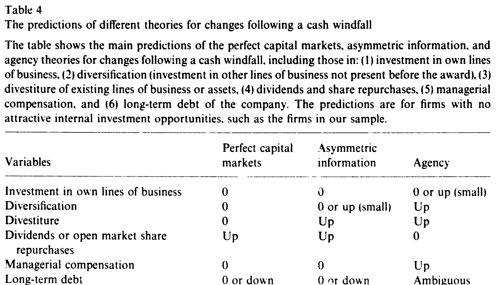
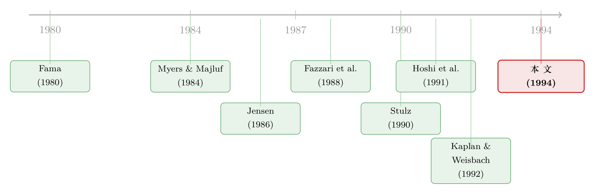

打赢一场官司，白得一笔钱——公司会怎么花？
本文读的是 Blanchard, Lopez-de-Silanes & Shleifer (1994, JFE)：作者找来 11 家「打赢官司、白得一笔现金、但投资机会丝毫没变」的公司，看它们到底把钱花到哪儿去了。结论是——这笔钱既没乖乖还给股东，也没投进真正赚钱的项目，而是被经理人用来买生意、保位子、加薪水。证据「大体上」与完美资本市场不符，对信息不对称模型「需要使很大的劲才能勉强解释」，最干净地落在了 代理 (agency) 模型上。
1 一个近乎完美的思想实验
先讲一个让人有点不安的事实。
设想一家公司，某天突然收到一大笔钱——不是辛苦经营赚来的，也不是融资借来的，而是天上掉下来的：它打赢了一场官司，对方赔了它一大笔现金。更妙的是，这场官司打的是陈年旧账——某个早已停产的产品、某段早已结束的反垄断纠纷——所以这笔钱并不会改变这家公司未来的投资机会。用金融学的黑话讲，它的 边际托宾 Q (marginal Tobin's Q) 一点没动。
那么问题来了：这家公司会拿这笔钱去做什么？
这看上去像一道课后习题，其实是一个近乎完美的思想实验。在标准的 完美资本市场 (perfect capital markets) 框架里，答案干脆利落：既然投资机会没变，公司就不该多投一分钱；钱放在公司里和放在股东口袋里没有区别——若再考虑公司内部的钱有税收劣势，那就更应该把钱还给股东：减债、分红、或回购。至于给经理人加薪？想都别想——他们的边际产出又没变，凭什么多拿钱？
理论说得头头是道。可现实里，谁见过哪家公司白得一笔钱后，老老实实把支票寄回给股东的？
这正是本文的妙处所在。它不是又一篇「投资—现金流敏感性」的回归论文，而是一次临床式的解剖：作者要做的，是把同一笔意外之财，放到三套互相竞争的理论面前，看谁的预测对得上。
2 三套理论，三张预测单
在动手看数据之前，得先把三套理论的「预测单」摆清楚。这是全文的脊梁。
完美资本市场。 如前所述：不该投、不该融、不该给经理人加薪；多余的钱原路退还给投资者。
信息不对称 (asymmetric information)。 这是 Myers & Majluf (1984)、Greenwald-Stiglitz-Weiss (1984) 那条线：经理人是替股东办事的好人，但外部投资者搞不清公司项目的成色，于是「惜贷」，公司被迫放弃一些正净现值 (NPV) 项目。一笔现金窗口落下来，恰好让这种「被信贷配给」的公司能去做那些原本做不了的好项目。
但这里有个关键转折——本文样本里的公司，恰恰是一批没有好投资机会的公司（后面会看到它们的 Q 低得可怜）。对这种公司，信息不对称模型的预测，几乎和完美市场一样：本业不该投、一般也不该多元化，倒是可以拿钱去做昂贵的关停与剥离 (divestiture)（因为受信贷约束的公司原本掏不起关厂、遣散、资产减记的钱），剩下的还是该还给股东。经理薪酬？照字面理解，也不该涨。
代理 (agency)。 这是 Jensen (1986) 自由现金流的世界，也是本文真正押注的那匹马。经理人有自己的小算盘：他们要的是公司在自己手里长久地活下去，不被破产、不被收购、不被债主指手画脚——也就是享受所谓的「控制权私利 (benefits of control)」。于是同一笔钱，预测就全反了：
- 本业还是不投（机会确实差），但会拿去多元化 (diversification)——哪怕这是负 NPV 的。因为把现金变成一摊难以变卖、难以管理的「业务」，能让公司不那么容易被收购、被清算；
- 不分红、不公开回购；若有回购，也是定向买断大股东或管理层，安抚那些可能威胁控制权的人；
- 经理薪酬会涨——赢了官司，经理人趁机把钱往自己兜里多塞一点，反正股东拿他没办法；
- 长期债务的方向含糊：可能拿去还债（少受债主管束），也可能反手借更多债去扩张地盘。
三套理论的差异，作者用一张表干净利落地钉死了。如表 4 所示，真正能把三套理论区分开的，是这么几个变量：多元化、分红/回购、经理薪酬。

Table 4
到这一步，叙事的张力已经拉满：完美市场说「还钱」，信息不对称说「还钱（顶多做点剥离）」，代理说「买生意、保位子、加薪水」。接下来要做的，就是去看这 11 家公司到底站在哪一边。
3 识别：为什么是「打赢官司」？
一个自然的问题是——凭什么相信这 11 家公司提供了一个干净的实验？
这正是全文识别策略 (identification) 的命门，也是作者花了最多笔墨的地方。核心诉求只有一句：这笔现金不能与投资机会沾边。 一旦官司本身打开了新市场、压制了竞争对手、或者赔的是能用于生产的资产，边际 Q 就变了，三套理论的预测便会纠缠在一起，没法区分。
作者的筛选堪称严苛。他们从《华尔街日报索引》(1980–1986) 的「反垄断」「专利」「诉讼」条目和《纽约时报索引》的「诉讼」条目出发，得到 110 家在此期间打赢或打输官司的公司，然后用四道关卡层层过滤：
- 第一关，也是最重要的一关：剔除任何赔偿可能与边际 Q 相关的案子。 产品仍在生产（17 家）、官司打开了新市场（4 家）、官司压制了在位竞争者（8 家）、涉及资产或专利使用费纠纷（12 家）、涉及股权收购（15 家）、赔的是资产或股权而非现金（4 家）、以及细节未在 10-K 里披露的（16 家）——统统拿掉。剩 34 家。
- 第二关：赔偿必须够大，否则看不出对公司行为的影响。把赔偿净额（扣掉律师费、其他支付方与税）要求达到「不低于、或非常接近过去三年平均净营业收入」。剩 18 家。
- 第三关：要有奖前 5 年到奖后 5 年的 10-K 与委托书。 剔掉 2 家。
- 第四关：去掉 5 家「输了官司」的——本文只关心现金流的增加。
最终，11 家。这 11 家分属三类——未履约合同（如 Pennzoil 诉 Texaco 那桩著名的违约赔偿）、反垄断（五桩里有四桩是告 AT&T 垄断电信市场）、专利侵权——共同点是：官司打的都是过去的事、停产的货，赔来的是纯现金，与今天的经营无关。
这是一把双刃剑。好处是干净：你很难再找到比「打赢一桩陈年旧案」更外生的现金冲击。坏处也很明显——11 个观测，没有对照组，没有回归，没有标准误。这更像一组精挑细选的案例研究 (clinical studies)，而不是一篇计量论文。作者对此心知肚明，索性把宝全押在「这笔钱确实不改变 Q」这一前提上。
这里有个标准但未必安全的假设：用平均 Q 去代理边际 Q。作者承认这一点。后面我们还会看到，他们其实有意把 Q 往「高了」估，好让自己的结论更难成立——这是种值得欣赏的诚实。
4 数据：一群「没有好机会」的公司
样本到手，下一步是把这 11 家公司的「家底」摸清楚。这一步至关重要：只有先证明它们没有好的投资机会，后面「它们却把钱拿去买生意」才显得反常。
赔偿确实大。 净赔偿额（present value，扣税与律师费后）中位数 $8.90 million；净赔偿额与销售额之比中位数 0.11，与总资产之比中位数 0.22。律师费只吃掉毛赔偿的中位数 14%——这笔钱，绝大部分真的落进了公司口袋。
机会确实差。 这 11 家公司普遍不赚钱，收入/销售之比最高也才 0.08。托宾 Q 的中位数只有 0.52——除了几乎没有资产的 DASA，其余公司的 Q 全都明显低于 1。一个低于 1 的 Q 意味着什么？意味着市场认为，这家公司每多投一块钱进自己的本业，创造的价值还不到一块钱。换句话说，它们理性的做法是把钱还给股东，而不是再投下去。
作者还嫌不够保守，进一步构造了一个把 Q 往下压的指标。他们注意到 Q 被系统性地高估了：很多赔偿是被市场预期到的（比如 Pennzoil 赢 Texaco 早有风声），预期的赔偿进了股价、抬高了 Q 的分子，却没进账面资产、没进分母。于是他们定义一个剔除掉这块「预期赔偿」的 Q：
$$ Q^{-} = Q - \frac{\text{NetAward}}{\text{BookAssets}} $$
这相当于假设赔偿被市场完全预期，从而给出 Q 的一个下界。结果触目惊心：\(Q^{-}\) 的中位数只有 0.35，而且没有一家的 \(Q^{-}\) 超过 0.6。再加上奖前的实际投资率中位数也只有 0.06——这是一群既没有好机会、平时也确实没怎么投资的公司。
舞台已经搭好：一群「该把钱还出去」的公司，白得了一大笔「该被还出去」的钱。它们会怎么做？
5 反转：股价只涨了一点点
第一个信号，藏在事件研究 (event study) 里，而它一上来就给了完美市场一记耳光。
如果市场相信这笔白得的现金会一块不少地流回股东手里，那么赢得官司的公告日，公司市值理应上涨一个接近赔偿净额的数。可数据说的是另一回事：在公告前后的三日窗口里，赢家市值上涨的中位数，只有赔偿净额的 0.151；就算把窗口拉长到 10 天或 100 天，这个比例也才升到约 0.3（10 天中位数 0.328，100 天中位数 0.318）。
换句话说——公司白得了一块钱，股东的财富却只多了一毛五到三毛。 那剩下的七毛到八毛五，去哪了？
市场显然预感到了什么。它知道这笔钱不会乖乖回到自己口袋，于是提前把「将被经理人挥霍掉的那部分」从估值里扣掉了。这一笔「打了折的好消息」，本身就是对完美市场最直接的证伪：如果钱真能无摩擦地还给股东，市值的涨幅就该贴近赔偿的全额。
（关于「一笔与诉讼挂钩的现金流如何被市场单独定价」，可参见《一场官司，被「切」下来单独挂牌》。）
那么，真正关键的一步——钱究竟花到哪去了？
6 落点：买生意、保位子、加薪水
把 11 家公司奖后五年的动作逐一摊开，一幅与代理模型严丝合缝的图景浮现出来。
本业，几乎不投。 这与三套理论都不矛盾（毕竟机会确实差），但它排除了「这些公司只是被信贷约束、拿到钱就去做好项目」的温情解释——它们手里没有好项目。
钱主要流向了多元化与收购。 这群本业没有出路的公司，拿着现金去买别的生意。这恰恰是代理模型最核心、也最与信息不对称模型分道扬镳的预测：在信息不对称的世界里，多元化至多是「为将来的好机会囤点现金」的权宜之计，且未必优于直接持有现金；而在代理的世界里，多元化本身就是经理人的头等目标——把流动的现金换成难以变卖、难以接管的业务版图，公司就更不容易成为收购者和清算者的猎物，经理人的位子也就更稳。持有现金做不到这一点，买下一摊生意才行。
几乎不分红、不公开回购。 多余的钱没有原路退还给股东。这一条直接掐死了完美市场和信息不对称两套理论——它们都预言应当向股东派现。
经理薪酬上去了。 赢了官司，经理人趁势给自己涨了薪。在「ex post settling-up」(Fama, 1980) 那套较为温和的代理叙事里，这或许能解释为「奖励经理人为打赢官司付出的努力」；但作者对此颇为不以为然——官司是律师打赢的，不是经理人打赢的，凭什么是经理人分这笔钱？更贴合数据的解释是另一种、也更冷峻的代理观：经理人能捞多少就捞多少，赢官司给了他们一个不必担心被收购或被股东以违反受托义务起诉、就能多拿钱的机会。
把这几条拼起来：本业不投、不还股东、去搞多元化、给自己加薪——这是一张几乎照着代理模型预测单填出来的答卷。 信息不对称模型不是完全无法解释，但正如作者所言，得「把它使劲拉伸」才勉强套得上（比如，硬说这些公司在为遥远的将来囤积机会）；而完美市场模型，从股价那记耳光开始就出局了。
注意叙事的闭环：第 5 节市场「预扣」掉的那七八毛钱，在第 6 节里有了着落——它们变成了别人公司的股权、变成了经理人的薪水。市场早就算到了这一点，所以股价才只涨了三成。事前的折价与事后的去向，是同一枚硬币的两面。
7 文献脉络
把这篇论文放回它所在的那条河流里看，会更清楚它的分量。
源头有两支。一支是信息不对称：Myers & Majluf (1984) 与 Greenwald, Stiglitz & Weiss (1984) 论证了，即便经理人一心为股东，外部投资者的信息劣势也会造成信贷配给，让公司放弃好项目——现金于是变得珍贵。另一支是代理：Fama (1980) 把经理人激励问题摆上台面，而 Jensen (1986) 的「自由现金流」假说则给出了最锋利的论断——当公司手握用不完的现金、又缺乏好机会时，经理人会倾向于把钱浪费在扩张帝国上，而非还给股东。Stulz (1990)、Hart & Moore (1989) 把这套直觉模型化为代理框架下的信贷配给。

实证这边，当时的主战场是投资—现金流敏感性：Fazzari, Hubbard & Petersen (1988) 发现不分红公司的投资对现金流更敏感，Hoshi, Kashyap & Scharfstein (1991) 用日本企业（有无银行关系）做出了类似发现。但这两篇都只盯着投资这一个变量，因而无法把「信息不对称」和「代理」干净地分开——两套理论对投资的预测往往一致，分歧藏在分红、多元化、薪酬这些别的变量里。Morck, Shleifer & Vishny (1990) 和 Kaplan & Weisbach (1992) 则提供了「1980 年代的多元化大体是零、甚至负 NPV」的关键证据，这恰是本文判定「多元化=代理」的前提。
本文的位置，就清晰了：它不和前人比谁的样本大、谁的回归更稳健，而是换了个识别策略——用一笔与 Q 无关的外生现金，把视野从「投资」拓宽到「多元化、分红、薪酬、债务」整张决策清单，从而第一次把三套理论摆到同一张桌子上对质。代价是样本只有 11 家，但换来的是识别上的干净。
8 评论与延伸（Q&A + 研究方向）
(a) 几个可能的疑问
Q：11 个观测，凭什么下这么大的结论？
这是本文最大的软肋，作者也不讳言。它本质是一组「临床研究」而非计量推断——没有对照组、没有标准误、没有 t 值。它的说服力不来自统计功效，而来自识别的干净：每一笔现金都被反复确认与边际 Q 无关。你可以把它读成「存在性证明」——证明代理行为确实会发生，而不是「平均而言有多普遍」。后者要等后来的大样本研究（如自由现金流文献的演进）去回答。
Q：用平均 Q 代理边际 Q，会不会一开始就把结论带偏了？
这是潜在的硬伤，但作者的处理方式让人放心：他们刻意把 Q 往高了估（构造
\(Q^{-}\)取下界、并指出困境公司的债务市值低于账面、进一步高估了 Q），结果哪怕在最有利于「公司有好机会」的设定下，\(Q^{-}\)中位数仍只有0.35、无一超过0.6。换言之，偏误的方向是与作者结论相反的——这反而强化了「这些公司确实没机会」的判断。
Q：股价只涨赔偿额的 15%–30%，会不会只是因为赔偿早被预期、公告日没什么新信息？
部分是。很多赔偿确有预期成分（这也是作者构造
\(Q^{-}\)的理由）。但把窗口拉到 100 天、把更早的预期也纳进来后，比例也才升到约0.3，仍远低于 1。这说明「打折」不只是时点问题——市场是真的相信相当一部分钱不会回到股东手里。事件研究的证据与事后的资金去向（多元化、薪酬）相互印证，单靠「预期」难以同时解释这两端。
Q：经理拿走一部分赔偿，难道不能是合理的「事后激励」？
能，这就是 Fama (1980) 式的「ex post settling-up」解释，作者也承认有读者会觉得它有说服力。但作者的反驳很直白：官司是律师打的，不是经理打的。 把一笔与经理边际产出无关的横财算作对其努力的奖励，逻辑上很勉强。更简洁的解释是经理人「能捞则捞」——这正是代理观与（温和的）激励观的分水岭。
Q：信息不对称模型真的被排除了吗，还是只是「不太合身」？
严格说是「不合身」而非「被证伪」。对一家有好机会的公司，信息不对称模型会预测它拿钱去投本业——可本文样本恰恰是一批没机会的公司，于是该模型退化得和完美市场差不多（不投本业、派现、顶多做点剥离）。真正与数据冲突的，是「不派现」和「负 NPV 多元化」这两条——要让信息不对称模型解释它们，得引入「为遥远将来囤机会」这类相当牵强的辅助假设。代理模型则不需要这些拐杖。
Q：这对「现金多就是坏事」的政策含义，是不是太悲观了？
要小心。本文说的是「在没有好机会的公司里，自由现金容易被经理人滥用」，这与 Jensen (1986) 一脉相承，但并不意味着所有公司都该被掏空现金。它真正的政策含义在治理与约束机制——债务、收购威胁、董事会——能否管住这种行为。这也正是后续四十年公司治理研究的主线之一。
(b) 几个可能的研究问题与提案
1. 把「现金窗口」实验搬到公司债与信用利差上。
【经济故事】本文只看了股东（股价）和经理（薪酬、多元化），却没细看债权人。一笔与 Q 无关的现金落地，对债权人是纯粹的好消息（违约距离拉远）——但如果经理拿它去搞负 NPV 多元化或反手加杠杆扩张，债权人未必得益。股与债的反应方向，能进一步把「经理是为股东还是为自己」拆开。 【可行性】中。需要把同类「外生现金事件」（大额诉讼和解、监管罚没返还、资产意外处置）匹配到发债公司，用事件窗口看 CDS 利差与债券价格的反应。难点是样本稀少且债券流动性差；TRACE（2002 年后）能提供成交数据，但与「Q 不变」的干净事件交集不大。属于「想法漂亮、数据难凑」。
2. 现金窗口下的「外资 vs. 内资持有人」差异。
【经济故事】如果代理问题的关键是「谁在盯着经理」，那么股东结构就该决定这笔横财的去向。外资机构、积极股东占比高的公司，是否更可能把钱还出去、更少搞多元化？这把本文与「外资作为治理者」的文献接上了。 【可行性】中。需要现金窗口事件 × 13F/跨国持股数据。在美国可借机构持股做截面比较；识别上要担心持股本身的内生性（好治理的公司本就吸引特定股东）。doable 但需要工具变量或准自然实验来切断内生性。
3. 用现代大样本「复刻」这 11 个案例。
【经济故事】本文是存在性证明，缺的是「有多普遍」。把诉讼赔偿、保险理赔、政府返款等外生现金冲击系统化地抓取出来，做一个几百上千家公司的样本，就能估计代理式挥霍的平均强度，并看它如何随治理质量、行业机会变化。 【可行性】高。文本挖掘（从 8-K、10-K、法庭数据库批量识别大额一次性现金流入）今天完全可行；难点回到老问题——如何大规模、可信地论证这些现金「与 Q 无关」。可用「赔偿涉及的是否为停产业务/陈年旧案」做机器分类，但会引入测量误差。这是最 doable 的一条。
4. 现金窗口与债务的「方向之谜」。
【经济故事】本文坦言代理模型对长期债务的预测是含糊的：经理既可能还债（少受债主管束），也可能借更多债扩张地盘。哪种力量占上风，本身就是个未解的实证问题，且很可能取决于公司离破产有多近、控制权受威胁有多大。 【可行性】中高。在大样本里，可用「事件后净债务变化」对治理变量、破产距离、行业并购活跃度回归，识别两种动机各自的触发条件。数据现成，关键是设计出能区分「防御性还债」与「扩张性举债」的检验。
9 我的判断
这篇论文最了不起的地方，不在结论，而在方法上的勇气。在一个人人比拼样本量和回归设定的年代，它反其道而行，用 11 个精挑细选的案例，换来了一个别人用大样本反而难以企及的东西——干净的外生性。「打赢一桩与 Q 无关的旧官司」这个识别巧思，几乎是天造地设：它把一笔现金从投资机会里彻底剥离出来，从而第一次让完美市场、信息不对称、代理三套理论能在同一组事实面前正面对质。这是 Shleifer 式实证的典范——找到一个能把理论逼到墙角的自然实验，而不是堆砌数据。
担忧也正源于此。11 个观测意味着任何结论都是「定性」的：它证明了代理式挥霍会发生，却说不清它有多普遍、在什么样的治理结构下会被遏制。样本是作者亲手筛出来的，筛选标准（尤其「这笔钱不改变 Q」）虽诚实却不可避免地带有主观判断；平均 Q 代理边际 Q 的老问题也始终悬在头上——尽管作者用「往高了估」的方式把它的杀伤力降到了最低。这些都不是硬伤，但提醒我们：这是一块奠基石，不是终点。
我最想看到的后续，是把这个「现金窗口」实验从股东侧推向债权人侧与外资持有人侧：同一笔横财，落到不同的监督结构里，会流向不同的地方吗？如果代理问题的本质是「谁在盯着经理」，那么谁持有这家公司的股与债，就该系统性地改写这笔钱的命运。三十年过去，自由现金流的故事仍在被反复重读（可参见《现金为什么一定要「还」出去？——四十年后，重读 Jensen 的自由现金流》，以及《债务这副药，为什么不能全吃？——重读 Jensen 和 Meckling 五十年》）——而这 11 家打赢官司的公司，始终是那条河流里最早、也最清澈的一处源头。
参考文献
Blanchard, O. J., Lopez-de-Silanes, F., & Shleifer, A. (1994). What do firms do with cash windfalls? Journal of Financial Economics 36(3), 337–360.
Fama, E. F. (1980). Agency problems and the theory of the firm. Journal of Political Economy 88(2), 288–307.
Fazzari, S., Hubbard, R. G., & Petersen, B. (1988). Investment and finance reconsidered. Brookings Papers on Economic Activity 1988(1), 141–195.
Greenwald, B., Stiglitz, J. E., & Weiss, A. (1984). Informational imperfections and macroeconomic fluctuations. American Economic Review Papers and Proceedings 74(2), 194–199.
Hart, O., & Moore, J. (1989). Default and renegotiation: A dynamic model of debt. Mimeo, MIT.
Hoshi, T., Kashyap, A., & Scharfstein, D. S. (1991). Corporate structure, liquidity and investment: Evidence from Japanese industrial groups. Quarterly Journal of Economics 106(1), 33–60.
Jensen, M. C. (1986). Agency costs of free cash flow, corporate finance, and takeovers. American Economic Review Papers and Proceedings 76(2), 323–329.
Kaplan, S. N., & Weisbach, M. S. (1992). The success of acquisitions: Evidence from divestitures. Journal of Finance 47(1), 107–138.
Morck, R., Shleifer, A., & Vishny, R. W. (1990). Do managerial objectives drive bad acquisitions? Journal of Finance 45(1), 31–48.
Myers, S., & Majluf, N. (1984). Corporate financing and investment decisions when firms have information that investors do not have. Journal of Financial Economics 13(2), 187–221.
Stulz, R. (1990). Managerial discretion and capital structure. Journal of Financial Economics 26(1), 3–29.